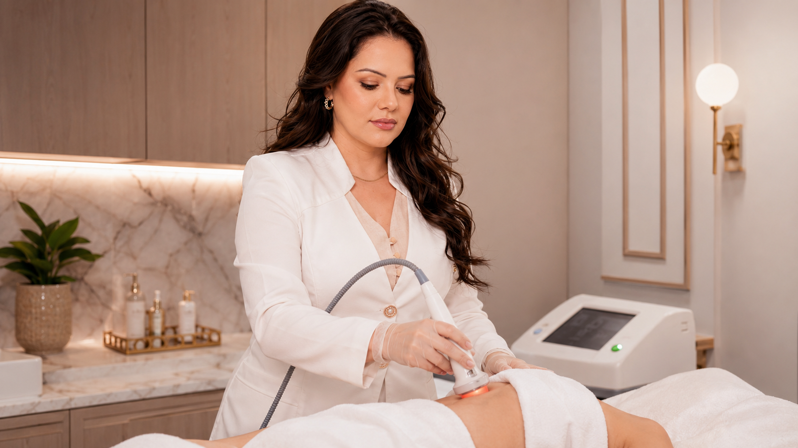

GUIA DE EVIDÊNCIA RADIOFREQUÊNCIA
Radiofrequência: como avaliar mudanças ao longo do tempo?
Uma impressão ao espelho, uma foto, a avaliação da profissional e uma escala clínica podem registrar aspectos diferentes. Estudos de radiofrequência usam métodos e calendários próprios; conhecer esses métodos ajuda a fazer perguntas, mas não permite prever o resultado de outro aparelho ou pessoa.

“Melhora” pode significar coisas diferentes
Uma escala aplicada pela profissional pode avaliar flacidez ou rugas de forma padronizada. Uma fotografia documenta aparência sob determinadas condições. A pessoa pode relatar satisfação, desconforto ou uma mudança percebida no cotidiano. Esses resultados são complementares, mas não intercambiáveis: uma mudança em uma escala não garante que cada pessoa perceba o mesmo benefício, e satisfação não substitui avaliação clínica.
Para comparar momentos, pergunte qual objetivo foi definido, qual sinal será observado, em que intervalo e por quem. Se forem usadas fotos, consistência de posição, distância, luz, expressão e ângulo ajuda a reduzir diferenças que não vieram do tratamento.
Como estudos de RF fizeram o acompanhamento
Em um ensaio randomizado dividido por lados da face, 20 participantes receberam radiofrequência monopolar de um lado e ultrassom microfocado do outro. Pesquisadores acompanharam até seis meses e usaram uma escala padronizada de flacidez facial e cervical, além da avaliação global da pessoa participante. Isso descreve aquele estudo e os aparelhos avaliados; não prova equivalência entre modalidades em qualquer contexto nem define o calendário de uma clínica.
Outro ensaio prospectivo, aberto e de um único braço acompanhou 40 participantes após radiofrequência monopolar nos dias 30, 60 e 180. Usou avaliação global por investigadores e questionários de satisfação. O artigo relata um protocolo particular — inclusive pré-medicação e um aparelho específico —, por isso seus números e datas não devem virar promessa ou instrução para outro tratamento.
Ensaio randomizado de radiofrequência monopolar versus ultrassom microfocado (2019) · Ensaio prospectivo de RF monopolar com avaliações até seis meses (2021).
Por que uma selfie não reproduz um desfecho de estudo
Luz frontal ou lateral, distância da câmera, lente, posição da cabeça, expressão, maquiagem e horário podem mudar a aparência. Um protocolo de pesquisa pode combinar fotos padronizadas, avaliadores, escalas e datas predefinidas. Uma imagem casual pode ser útil para conversar sobre uma percepção, mas não reproduz automaticamente esse método nem confirma causalidade.
Você pode perguntar se o serviço oferece registro fotográfico, como as imagens são armazenadas e usadas e qual consentimento é necessário. Não é preciso enviar imagens pessoais para esta página nem expor fotografias para obter orientação geral.
Perguntas úteis para a consulta
- Qual mudança é o objetivo e como será avaliada?
- Que medida será usada: escala clínica, fotografia, relato pessoal ou combinação?
- Quais são os momentos de acompanhamento e por que foram escolhidos?
- Qual é o modelo e a modalidade do aparelho? A evidência citada corresponde a ele?
- O que será considerado uma resposta insuficiente, variável ou motivo para rever o plano?
O serviço público informa radiofrequência, mas não identifica nesta página todos os detalhes técnicos do equipamento ou o protocolo de acompanhamento. Esses pontos precisam ser explicados pela profissional; resultados de outros aparelhos não os confirmam.
Leituras relacionadas
Atendimento em Londrina
Este conteúdo é educativo e não mede o resultado de um caso individual. A avaliação, o aparelho, os desfechos e qualquer acompanhamento devem ser definidos pela profissional responsável para a proposta concreta.